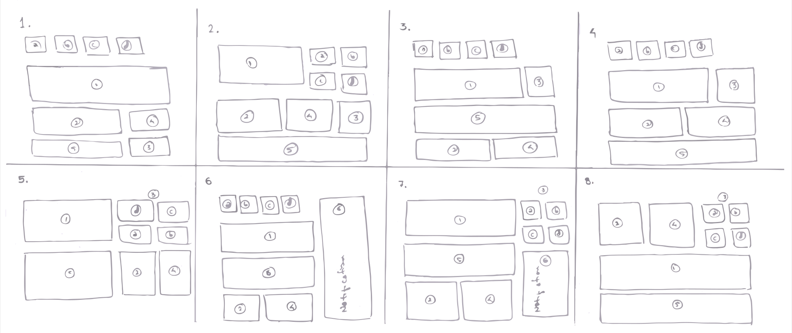
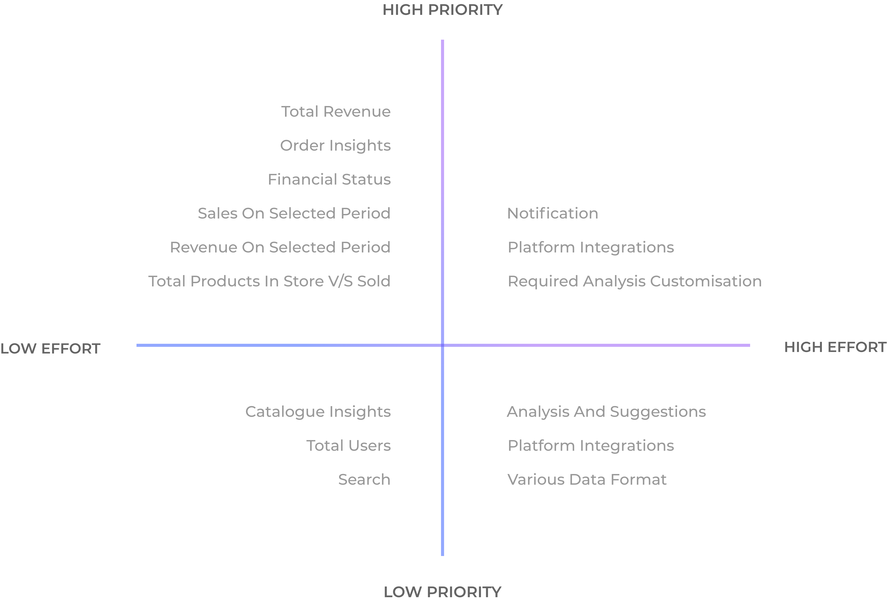
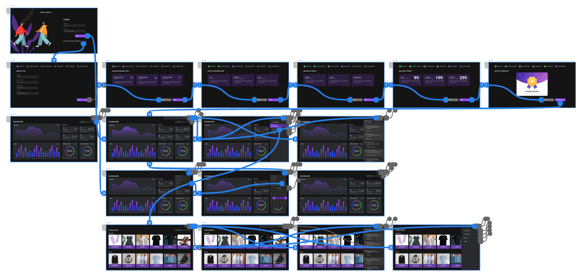
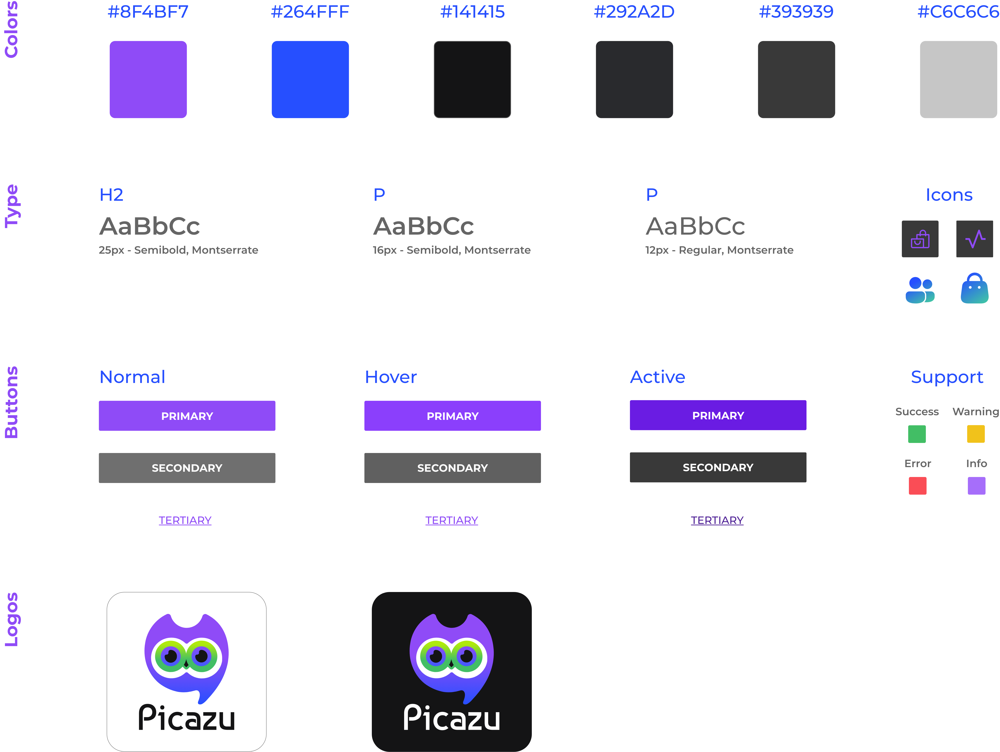

Site Map

Winter 2022
Visuals, Interactions, Research
UX Research
UI/ UX Design
Prototyping
Usability Study
People have a challenging time gathering, maintaining, and analyzing data about their products and billing since there is a great deal of data and a short timeframe. Picazu is a platform that collects data from various sources and presents it in a graphical manner. It creates a simple visual representation of the collected data in order to make it easy for the user to comprehend and analyze his sales and billing transactions in a simple and easy way. Using a comparison and analysis of sales in different periods, it suggests retailers to sell specific products. In addition, it analyzes market trends and recommends catalogs to the user so that they can increase their product sales.
Picazu is great for quickly collecting and analyzing data, but they are also useful for learning about the current market trends and user performance in selling the products. As a result of designing an intuitive and simple interface, we believe anyone can use it.
As a starting point for the project, I met with our team and listed a few initial questions that I wanted to consider as a UX designer, such as what are some of the common pain points your users might experience in their business, and how this project can address those pain points and be able to fulfil the needs of those users. Then, we defined the requirements, goals, scope, and milestones of this project in order to plan its development.
Few initial questions,
Affinity Map
Works during the day for 8 hours and enjoy travelling during their off time to relax. They are frustrated with data filtration because of the vast collection of data and the complicated process of accessing that data. They also feel disappointed that sometimes the collected data may need to be in the proper format to access other platforms to visualise the data, which requires maintenance and quality control.
Retired Bank Manager who has Microgreens business to help people to get more nutritious, natural, healthy and organic food. They enjoy being with their family during their off time to relax. Sometimes as the sale increases, he might get frustrated checking each different app for transactions, sales, profit and losses etc., and wish to have an app-like dashboard where he can see everything in one place and analyse sales.
To construct a concise and solid foundation for Picazu, I had to venture out and see what the prominent dashboard applications were already doing and what user goals they were not reaching.
The majority of the features between competitors were very similar, however the main differences that we noticed were:
In order to get a sufficient quantity of ideas, I collected all the user's problems and needs within a set time frame and sketched eight different designs, each with a different solution for solving the user's problem, which takes only a minute for each design without any limitations or considerations for practicality.
Crazy Eights
The ideas were sorted remotely and discarded that were unsuitable or completely beyond our capability. Plotted ideas on the chart in order of feasibility and importance using sticky notes. Using this prioritisation plot, we assessed and analysed what was most important in a collaborative, disciplined manner to the users and business. Furthermore, it helped us focus on our long-term goals.

I like to sketch out my ideas quickly on paper to get a basic layout that highlights the intended function of the dashboard and leaves space for exploration in the digital wireframing and prototyping stages.

My first step was to sketch and get feedback on the paper wireframe. After considering and incorporating the changes I figured out from the feedback, I jumped into sketch and started creating a digital wireframe to provide a better picture of the dashboard's interactions and flow.

Following the wireframes and the team's understanding of the interactions, I began working on the UI design. The following were some key aspects I wanted to keep in mind:
With the visual look and feel approved, I moved on to the final part of this project, creating a high fidelity prototype
Some of the UI/ UX principles are being applied from starting with sketching the basic layouts to designing the high-fidelity prototypes
These principles helped me to,
Incorporating cool and comfortable colours like purple as a secondary colour evokes a sense of peace, wisdom, and pride in users. Paired with black as the primary color, the design conveyed power, ambition, formality, and peace to users and was the perfect match for Picazu's branding. The main typeface of choice for the app is Montserrat, I felt this typeface is best fit for the app because of the shape, type of serif and the overall style of the letters.
It was with excitement and enthusiasm that we moved beyond the vision of not just better analysis by the retailers, but also our ability to be able to analyse and suggest the market trends to them in order to help them increase their sales, which was the primary goal and outcome of our venture. Our approach is probably not the best out there, but I believe most users found it to be useful. Also, The project gave me a chance to play around with the new features in Adobe XD and experiment with colour combinations, in addition to the Picazu’s features.
Be sure to check out the process for Picazu’s creation below!